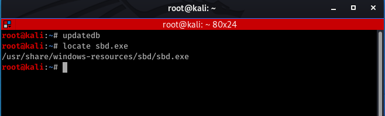
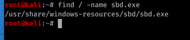
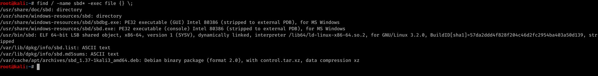
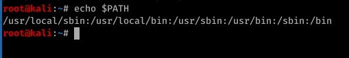
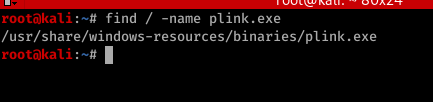
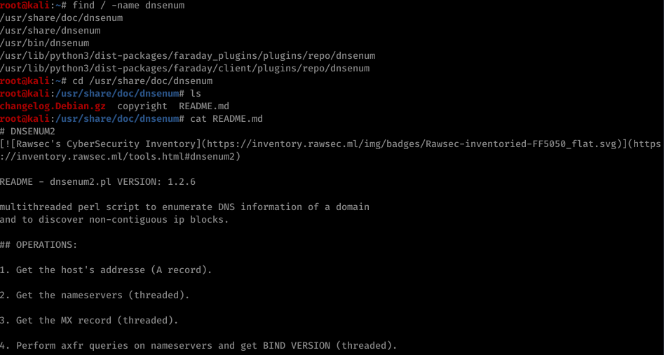

Index
1.Kali Uzerinde Isinma Turlari
1.1 Kali Üzerinde Yolumuzu BulmakKali Linux üzerinde 300'den fazla penetrasyon test toolları bulunmaktadır. Kali Linux üzerinde aradaığımız dosyaya/dizine/tool'a ulaşmak bizim için önemli bir konudur. Bu bölümde kali üzerinde aradığımızı bir dosyaya/dizine/tool'a nasıl ulaşırız öğrenmiş olacağız.
1.1.1 Find, Locate ve Which Komutları
Linux üzerinde dosya aramanın bir çok yolu bulunmaktadır. Ancak bunlardan en çok kullanılan 3 komut find, locate ve which komutlarıdır diyebiliriz. Bu üç komutta işletim sistemi üzerinde kendine verilen pattern'leri aramaktadır, ancak bunları farklı yöntemlerle yapmaktadır.
locate komutu kendine verilen pattern'leri kendi veri tabanında aramkatdır. Günde bir defa kendi veritabanını güncelleştirmektedir. Dolayısı ile locate komutunu kullanmadan önce komutun veri tababınını updatedb komutu ile güncellemeliyiz. Örneğin sbd.exe'yi kali üzerinde locate ile arayalım.
-updatedb
-locate sbd.exe

locate komutu ile ilgili detaylı detaylı kullanıma man locate ile komutunun manuelinden bilgi alabiliriz.
find komutu kendisine verilen pattern'i tüm işletim sistemi üzerindeki dizinleri gezerek bulmaya çalışır. Aynı sbd.exe dosyasını find ile arayalım.
-find / -name sbd.exe
Burada ;
/ ifadesi tüm işletim sistemi üzerinde arama yapacağını bize söylemektedir.
-name ile hangi isimli dosyayı arayacağımızı belirityoruz.

find ile aradığımız dosyayı bulduktan sonra onlar üzerinde işlemler gerçekleştirebiliriz. Örneğin find ile sbd ile başlayan dosyaları bulalım ve onların file type'ını tespit edelim.
find / -name sbd* -exec file {} \;

find kullanarak dosyaların sahipliklerine göre, oluştrulma zamanlarına göre, dosyaların boyutlarına ve daha bir çok parametreye göre aramalar yapabiliriz find'ın detaylı kullanımını komutunun manuel'ini man find komutunu ile okuyarak öğrenebiliriz.
which komutu ise işletim sisteminin $PATH değişkeni altında belirtilen dizinlerde arama yapar.
echo $PATH komutu ile işletim sistemindeki PATH değişkeninde tanımlanan dizinleri görebiliriz. İşte which komutu bu dizinler altında arama yapmaktadır.
-echo $PATH

sbd.exe'yi which ile aradığımızda, bu dosya $PATH değişkeni altında tanımlanmadığı için bize hiçbir sonuç dönmeyecektir.
- which sbd.exe
which komutu ile ilgili detaylı bilgileri man which ile komutun manueline bakarak öğrenebiliriz.
1.1.2 Alıştırmalar
a. Kali üzerindeki plink.exe dosyasının lokasyonunu tespit ediniz.
- find / -name plink.exe

b. dnsenum tool'unu bulunuz ve dökümantasyonunu okuyunuz.
- find / -name dnsenum
- cd /usr/share/doc/dnsenum
- cat README.md
